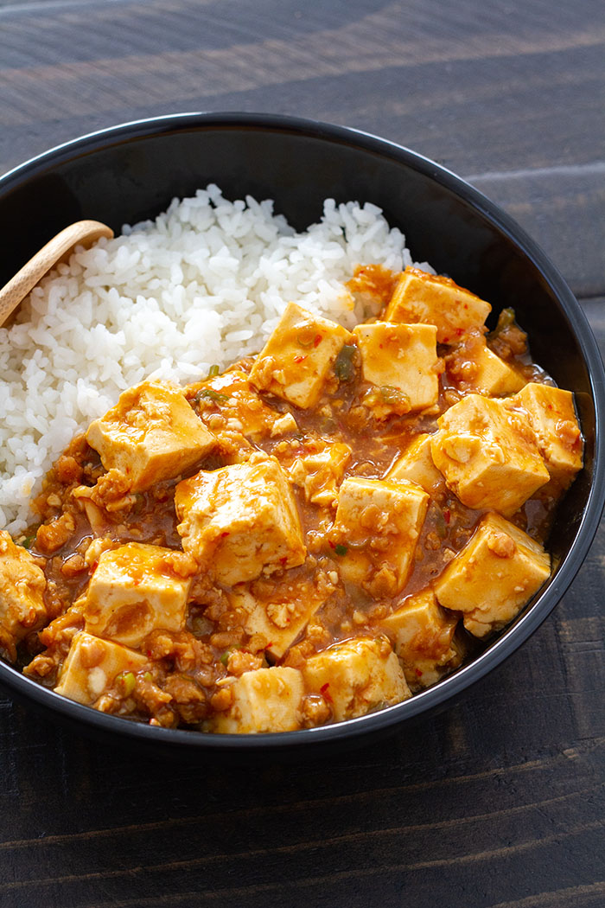

Mapo tofu

The best tofu recipe. Period.
This is the god recipe. There is nothing that can compare
to a good bowl of mapo tofu that you can cook in this short amount of
time. I have grown up eating mapo tofu. When kids and teachers at school
would express disgust at the idea of eating tofu, I would silently pity
them for I knew they had never had mapo tofu. Don't tell my mom, after I
found this recipe on Just One Cookbook,
I have started to follow JOC's ingredients almost completely. I have
changed two things from Namiko Chen's recipe. She uses
doubanjiang, but I prefer gochujang. For the tofu, she recommends silken,
which I use sometimes, but I almost always prefer firm for mapo tofu.
I highly recommend Just One Cookbook
for your Japanese recipe needs. She does a fantastic job with instructions.
I often get annoyed by extra information on recipe pages, but I find any
additional information she provides educational and enjoyable.
Ingredients
To make 4 servings.
- (2 cloves) garlic
- (1 knob) ginger
- (2) green onions/scallions
- (14 oz) tofu (Namiko recommends silken, but I use firm.)
- (1/2 cup) ground pork (I often sub turkey)
- (1 tbsp) neutral-flavored oil
- Desired amount of cooked rice. Mapo tofu goes perfectly with a bowl of steamed rice.
Seasonings
- (2 1/2 tbsp) gochujang (or doubanjiang)
- (2 tbsp) mirin
- (1 tbsp) miso
- (1 tbsp) oyster sauce
- (1/2 tbsp) soy sauce
- (1 tsp) sesamo oil (roasted)
- (1 tsp) potato starch/cornstarch
- (4 tbsp) water
Steps
- Combine all the ingredients for Seasonings (2 ½ Tbsp doubanjiang, 2 Tbsp mirin, 1 Tbsp miso, 1 Tbsp. oyster sauce, ½ Tbsp soy sauce, 1 tsp sesame oil, 1 tsp corn starch, 4 Tbsp water) in a bowl and mix well together.
- Mince the garlic cloves and ginger finely.
- Cut the green onions into small pieces. Drain the tofu and cut into about 1 inch (2.5 cm) cubes.
- In a large frying pan, heat vegetable oil on medium heat and saute garlic and ginger. Make sure you don't burn them. Once they are fragrant, add the ground pork and break it up with a spatula or wooden spoon.
- When the meat is no longer pink, add the Seasoning mixture and stir thoroughly.
- Once the sauce is back to boiling, add the tofu and gently coat the tofu with the sauce. Stir frequently, without mashing up the tofu, until it is heated through. Add the green onions and mix just before taking the pan off the heat. Serve immediately.